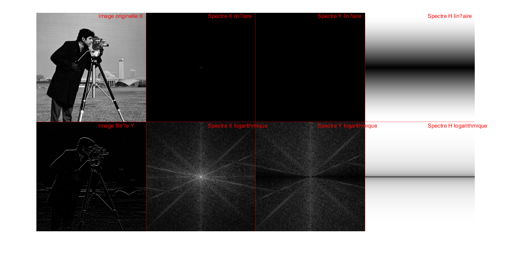

X=imread('cameraman.tif');
X = mat2gray(X);
f = im2double(X);
g1 = [-1 1];
Y3 = convn(f, g1);
figure;
subplot(2,3,1);imshow(X);title('X')
subplot(2,3,2);imshow(mat2gray(abs(Y3)));title('mat2gray(abs(Y1))')
subplot(2,3,3);imshow(mat2gray(Y3));title('mat2gray(Y1)')
f = im2double(X);
g2 = [1 -1]';
Y3 = convn(f, g2);
subplot(2,3,4);imshow(X);title('X')
subplot(2,3,5);imshow(mat2gray(abs(Y3)));title('mat2gray(abs(Y1))')
subplot(2,3,6);imshow(mat2gray(Y3));title('mat2gray(Y1)')
AffichageFiltrage(X,g1)
AffichageFiltrage(X,g2)

h3 = [ 1 0 -1 ; 2 0 -2 ; 1 0 -1 ];
h4 = [ 2 1 0 ; 1 0 -1 ; 0 -1 -2 ];
h5 = [ 1 2 1 ; 0 0 0 ; -1 -2 -1 ];
h6 = [ 0 1 2 ; -1 0 1 ; -2 -1 0 ];
f = im2double(X);
Y3 = convn(f, h3);
figure;
subplot(4,3,1);imshow(X);title('(a): X')
subplot(4,3,2);imshow(mat2gray(abs(Y3)));title('(a): mat2gray(abs(Y1))')
subplot(4,3,3);imshow(mat2gray(Y3));title('(a): mat2gray(Y1)')
f = im2double(X);
Y3 = convn(f, h4);
subplot(4,3,4);imshow(X);title('(b): X')
subplot(4,3,5);imshow(mat2gray(abs(Y3)));title('(b): mat2gray(abs(Y1))')
subplot(4,3,6);imshow(mat2gray(Y3));title('(b): mat2gray(Y1)')
f = im2double(X);
Y3 = convn(f, h5);
subplot(4,3,7);imshow(X);title('(c): X')
subplot(4,3,8);imshow(mat2gray(abs(Y3)));title('(c): mat2gray(abs(Y1))')
subplot(4,3,9);imshow(mat2gray(Y3));title('(c): mat2gray(Y1)')
f = im2double(X);
Y3 = convn(f, h6);
subplot(4,3,10);imshow(X);title('(d): X')
subplot(4,3,11);imshow(mat2gray(abs(Y3)));title('(d): mat2gray(abs(Y1))')
subplot(4,3,12);imshow(mat2gray(Y3));title('(d): mat2gray(Y1)')
AffichageFiltrage(X,h3)
AffichageFiltrage(X,h4)
AffichageFiltrage(X,h5)
AffichageFiltrage(X,h6)
h7 = (1/8)*[ 0 1 0 ; 1 -4 1 ; 0 1 0 ];
f = im2double(X);
Y7 = convn(f, h7);
figure;
subplot(1,3,1);imshow(X);title('X')
subplot(1,3,2);imshow(mat2gray(abs(Y7)));title('mat2gray(abs(Y1))')
subplot(1,3,3);imshow(mat2gray(Y7));title('mat2gray(Y1)')
AffichageFiltrage(X,h7)
X = im2double(X);
X = imgaussfilt(X, 0.1);
h8 = fspecial('log',[15 15],1);
Y7 = convn(X, h8);
AffichageFiltrage(X,h8)
figure;
subplot(3,3,1);imshow(X);title('X segma=1')
subplot(3,3,2);imshow(mat2gray(abs(Y7)));title('mat2gray(abs(Y1))')
subplot(3,3,3);imshow(mat2gray(Y7));title('mat2gray(Y1)')
h8 = fspecial('log',[15 15],1.5);
Y7 = convn(X, h8);
subplot(3,3,4);imshow(X);title('X segma=1.5')
subplot(3,3,5);imshow(mat2gray(abs(Y7)));title('mat2gray(abs(Y1))')
subplot(3,3,6);imshow(mat2gray(Y7));title('mat2gray(Y1)')
h8 = fspecial('log',[15 15],0.5);
Y7 = convn(X, h8);
subplot(3,3,7);imshow(X);title('X segma=0.5')
subplot(3,3,8);imshow(mat2gray(abs(Y7)));title('mat2gray(abs(Y1))')
subplot(3,3,9);imshow(mat2gray(Y7));title('mat2gray(Y1)')